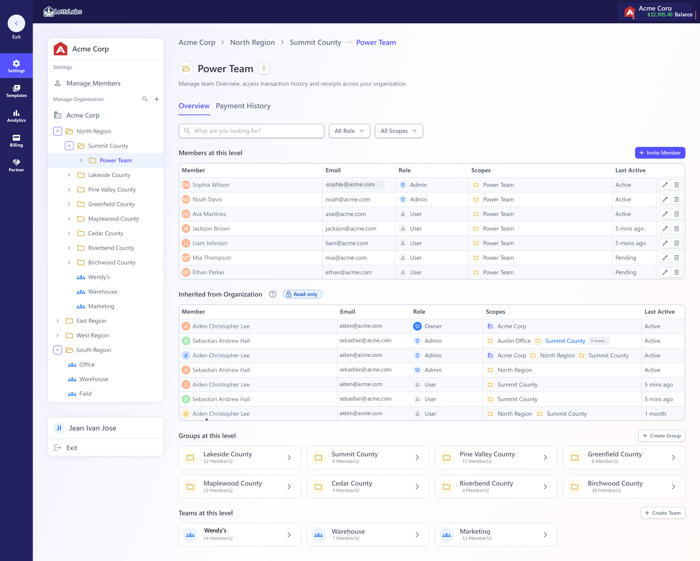
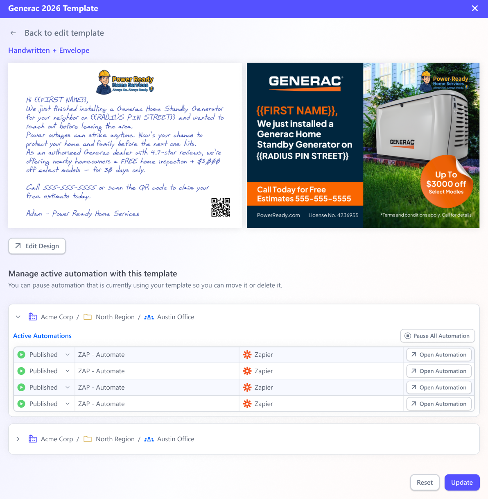
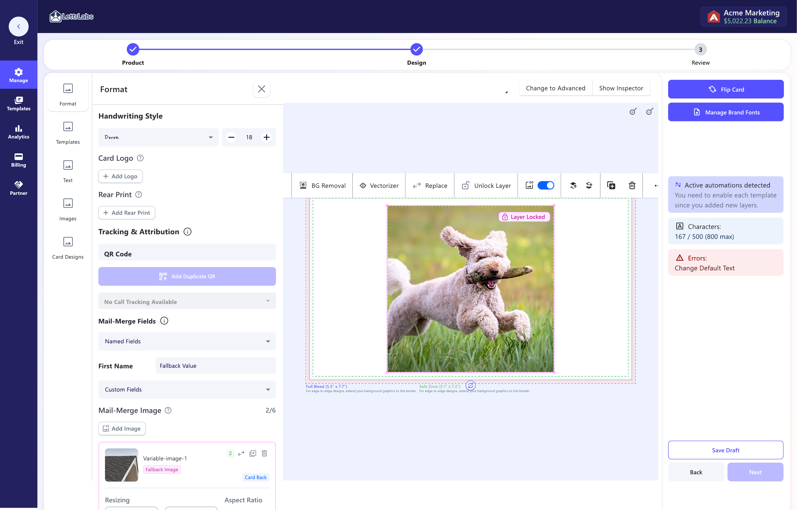

Giving enterprise teams one place to manage roles, permissions, and shared templates.
LettrLabs' biggest customers had outgrown group management. This is the organization layer that sits above the groups. It holds shared roles, permissions, and centrally-governed templates, and it was built to meet the named requirements of a high-value enterprise prospect. The CEO and CTO sponsored it.
See the org model
Visit LettrLabs
I led the template system end-to-end. The org-level actions I built closely with engineering, alongside a PM and a Staff Designer.
Executive summary
We shipped organization management: members, roles, a nested permission model, governed templates, and partner. It means structural actions can happen in-product instead of routing every one through ops. We built it to meet a high-revenue account's named requirements to sign.
My roleLed the Template system end-to-end. Contributed to Members, Groups & Billing, then reused the system for Partner. Worked with a PM, a Staff Designer, and engineering.
Scope (this study)Members · Roles · Permission model · Templates · Partner
The hard partAny structural change can hit a live automation, so the flow has to show what it affects before you commit
AI in the workDesign system, validations, UX stories, first-draft prototype, and UX copy
StatusEvaluated and shipped
At a glance
One permission system, five surfaces, designed for self-service.
1high-value enterprise account named org management a requirement to sign. It was one of several must-haves the work had to meet
5 surfacesdesigned on one backbone: members, roles, the permission model, templates, and partner (billing is a companion study)
3 → self-servestructural changes used to need Customer Success, the CTO, and the Director of Engineering. The shipped system was designed to move those actions in-product
5 levelsgroups nest up to five deep, with permission that follows the hierarchy
~75%of revenue sits with the 3 largest clients this org layer had to serve
1 systemone permission model reused across members, templates, and partner, not four separate builds
Account and revenue figures come from internal reporting, rounded.
The problem
LettrLabs' biggest customers had outgrown group management. Plenty of teams and budgets, but no organization layer above the groups. No shared roles, no pooled billing, no centrally-governed templates. Every structural change had to route through Customer Success, the CTO, and the Director of Engineering, and a paused automation is lost revenue.
What I did
I led the Template system end-to-end, then carried its shared permission model and patterns across members, roles, billing, and partner, working with a PM, a Staff Designer, and engineering.
The outcome
The shipped pattern moves structural actions into the product. Adoption and completion time are launch measures. Org management also sits on the must-have list of a major enterprise prospect whose named requirements it was built to meet.
Main UX
The real design problem was permission that follows the hierarchy.
Before any screen, I had to get the model right. How organizations, groups, users, and partners relate, and exactly who can see and do what.

Manage Members: org tree, roles, and the nested scope selectorTopOrganizationOwns billing, templates, and analytics for everything beneath it.
ExternalPartnerAn outside party the org pays for. Limited template use, isolated analytics, walled off.
NestableGroups / teamsIndependent teams, each with its own budget, campaigns, and people.Nests up to 5 levels deep
User · modifyAdminChanges within their branch of the tree.
User · viewMemberSees their org and groups, but changes nothing.
| Capability | Owner | Admin | Member |
|---|---|---|---|
| See their org & the groups they belong to | |||
| Invite people, set roles & scopes | - | ||
| Manage billing | - | ||
| Create & govern templates | - | ||
| Transfer ownership or delete the org | - | - |
Can do View only - No access
Groups are independent. A member of Group A can't see Group B. Only someone in the umbrella group above both can. Permission inherits down the tree, never sideways, and an admin's reach stops at the highest group they administer.
Before nesting, the models I ruled out
Three simpler permission models, and why each broke at enterprise scale.
Nested inheritance wasn't the obvious first choice. It's what survived after the simpler options failed against real, multi-level org charts.
Permission model
Why it broke, or survived
Ruled outFlat org-wide roles ✕
Easiest to build, but it can't bound reach. A regional lead could edit another region's billing and templates. There's no way to say "admin here, not there."
Ruled outAccess-list per resource ✕
As flexible as it gets, but it doesn't scale. Every new hire or template means re-granting across the tree, and "who can see what" drifts out of anyone's head within a quarter.
Ruled outTwo levels only (org → team) ✕
Enough for a small company, but enterprises run region → county → office, which is deeper than two. A hard cap forced customers to flatten their real structure.
ShippedNested inheritance ✓
Reach is automatically bounded to a branch, it scales as the tree grows, and it matches how the enterprise is organized. It carries one cost, working out which live automations a change touches, and that cost became the "show the blast radius before you commit" flow.
The problem behind every screen
Almost every structural change can pause a live automation.
Moving a team, deleting a payment method, removing a template scope, editing a locked design. Any of those can quietly break a running campaign, and a paused automation is lost revenue. That ran through the whole project. Never let an admin make a structural change without first showing exactly what it breaks.
Before you commit, who loses access
Move a team to a new parent and some admins lose their reach. The move dialog names each person and the reason, like "admin of previous parent group", before anything changes.
Before you commit, who gains access
The same dialog shows who gains access under the new parent, so the person making the move sees the full blast radius, both directions.
 Move a team: members who lose access, and who gain it
Move a team: members who lose access, and who gain it
 Delete a region: who loses access, and where the sub-groups go
Delete a region: who loses access, and where the sub-groups go
Templates · my end-to-end area
Govern centrally, use locally, without touching live campaigns.
A top-level admin creates a template once. Any group can use it, as long as a scope (the shared group) is set. That's how an org sends one campaign across many teams and still keeps control of the design.
Every template control on one surface. Filter by the job.
Pick a job to filter the controls, then click any row to open that screen.



How I worked
Templates were my end-to-end area. Working with a PM, a Staff Designer, and engineering, I owned the template system in full. Its scopes, locked layers, and affected-automations flow became the patterns we reused across Groups, Billing, and Partner. How I drove AI through the work →
AI in the process
AI-READY SYSTEM
AI prototyped org states from the shared Figma system, so drafts stayed aligned with the product.
The org surface has a lot of states. Empty groups, deeply nested scopes, locked templates, affected-automation warnings. So AI drafted those states from the design system's own components and our shared Markdown (.md) specs, the same components and voice-and-tone docs behind the Figma system. Drafts stayed aligned with that system instead of turning into one-off mocks. (These ran as HTML prototypes. The coded React version came later, on my own, after I was let go, and that's the design-system case study.)
That freed the team up for the flows that carried real risk, the structural ones that touch automations. I'm usually the one bringing AI into the workflow. I test Figma Make, Codex, Claude's design tooling, and MCP, push them past production output into usability, research, and discovery, then write down what works. I taught the approach to our Staff Designer and we learned it together. Our Senior PM built three of his own prototypes from the same specs. It's still a workflow we're refining.
Read the design system case study →component-specs.md
One source of truth
Components, tokens, and rules authored once in the Figma system, so every AI-drafted org state used the real components instead of a one-off mock that would drift from that source of truth.
validations-branches.md
States & logic
Relevancy checks, validations, and conditional branches for empty, nested-scope, locked-template, and affected-automation cases, all drafted with AI from the same specs behind the design system.
ux-copy.md
First-draft copy
A machine-readable voice-and-tone reference produced first-draft UX copy for each org state that already sounded like the product, so the AI passes stayed aligned with the Figma system.
The same system made accessibility a spec, not a cleanup.
Permission and structure screens are exactly where accessibility gets skipped. Because the rules live in that system, it was a constraint from the start, and the org UI met WCAG 2.1 AA. Here's what it held to on the shipped UI. (Ratios sampled from the shipped LettrLabs UI.)
Contrast
13.1:1 primary text AAA
15.6:1 nav on dark AAA
6.8:1 muted text AA
4.9:1 button label AA
Built in
Keyboard-operable
Visible focus
Never color alone
Errors tied to the field
Screen-reader checked
Outcome
One shared org model, ready for customer self-management.
Org management and billing shipped as one system on a shared permission backbone, so the two studies report the same outcome. This one tells it from the org side. The companion study tells it from the money side.
01 / SELF-SERVE · PROJECTED
Designed for self-management
The shipped pattern moves structural actions into the product: access, roles, billing edits, and template sharing. All four enterprise accounts are expected to self-manage at launch. Adoption and completion time are still pre-launch measures we have to validate with live accounts.
02 / REVENUE · PROJECTED
Built for the base, and on the next deal's must-have list
These surfaces serve the three accounts behind ~75% of revenue. The prospect we're pursuing, ~$2M in potential revenue if it signs, named org management and org billing as requirements to join. That's a named requirement, not a nice-to-have.
03 / SAFETY
A pattern that protects revenue
The shipped pattern shows the blast radius before a structural change, so admins can weigh the risk to the 95 live automations each account runs. The same protection gets reused across billing edits, roles, scopes, and templates.
04 / GOVERNANCE · SHIPPED MODEL
One model for enterprise governance
Teams, budgets, and centrally governed templates share one organization model, with permission following the hierarchy up to five levels deep. Live self-management is the launch behavior to validate.
05 / DESIGN SYSTEM
0 → 45 components, 3 md specs
The org surface drew from a Figma design system I took from 0 to 45 components with 3 Markdown spec files. Those are the same components and specs the AI prototyped from. It cut roughly ~30% off design time (internal estimate) and kept drafts aligned with the Figma system.
06 / REUSE
One backbone, five surfaces
The scope model and the show-the-impact-before-you-commit flow are reused across members, roles, templates, billing, and partner. That's systems thinking applied structurally, instead of solving one surface at a time.
Reflection
The automation-protection flow matters most, and it's still my biggest open question.
The hardest and most important part was making structural changes safer by showing their impact before commit. We shipped that safeguard. There's a cleaner flow than checking affected automations one modal at a time though, and it's the first thing I'd revisit.
"The screens were the easy part. The real work was a permission model that keeps central control and local use legible, and shows campaign impact before a structural change is committed."